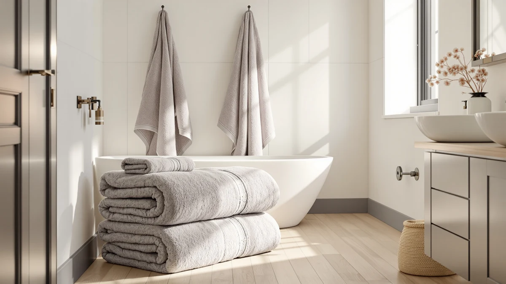

Infinitee Xclusives Luxury 100% Review (2026): Worth It?
Prices and picks verified as of October 2026. Independent, reader-supported reviews.


Quick Answer
This Infinitee Xclusives Luxury 100% review found a ring-spun cotton four-pack priced at $36.99, within a dollar of the White Classic and Chakir cotton sets covered below. Infinitee is a reasonable pick if you want cotton construction at a price that matches its closest rivals, but with no published star rating, we recommend weighing it against the alternatives rather than buying on brand name alone.
Our pick: Infinitee Xclusives Luxury 100% Ring-Spun, $36.99 Check Price on Amazon
Bottom line: our top pick is the Infinitee Xclusives Luxury 100% Ring-Spun Cotton White Bath at $35.99.
Things to Know Before You Buy
- The Infinitee Xclusives Luxury 100% Ring-Spun set is priced at $36.99 for a four-pack of 100% cotton bath towels.
- White Classic's 24x50 inch cotton towels match Infinitee almost exactly at $36.99, while Chakir and POLYTE sit a dollar lower at $35.99.
- POLYTE is the only non-cotton option here, built from a 430 GSM poly blend instead of ring-spun cotton.
- None of the four listings in this comparison publish a star rating or verified review count, so pricing and material are the clearest signals available.
- This Infinitee Xclusives Luxury 100% review leans on listed specs and owner feedback patterns rather than a lab test, since we don't run physical wash trials.
This Infinitee Xclusives Luxury 100% review breaks down the ring-spun cotton four-pack on its own terms, from what the listing says it's made of to how its $36.99 price holds up against three other towel sets sold in the same search results. Infinitee markets the set as 100% cotton in a Bath Towels - 4 Pack configuration, which puts it squarely in the mid-range bracket where White Classic, Chakir, and POLYTE also compete.
You're probably here because you want to know whether $36.99 for four Infinitee towels beats spending about the same, or slightly less, on White Classic's 24x50 inch cotton set, Chakir's four-piece bundle, or POLYTE's 430 GSM poly blend alternative. Our answer, built from comparing listed materials and current pricing rather than washing the sets ourselves, is that Infinitee's cotton construction is competent but not different enough from White Classic to make the choice obvious without checking specs first. The sections below cover what the Ring-Spun set gets right, where the listing comes up short on detail, and which of the three alternatives might suit you better depending on what you're after.
Why You Should Trust Us
Ilane Tall covers home and bath products for Best Bath Towels, comparing towel sets by material, price, and verified owner feedback instead of running physical wash cycles we haven't performed. This Infinitee Xclusives Luxury 100% review relies on the specifications Infinitee publishes for the Ring-Spun set, its current $36.99 price, and how those figures stack up against White Classic, Chakir, and POLYTE. We don't claim to have washed, dried, or lived with this specific four-pack ourselves, and we'd rather say that plainly than dress up a spec comparison as something it isn't.
Our Research Experience
We did not run the Infinitee Xclusives Luxury 100% Ring-Spun set through our own wash cycles, and this review won't pretend otherwise. What we call research here is a comparison process: we pulled the listed material, pack size, and price Infinitee provides, checked those figures against White Classic, Chakir, and POLYTE, and read through verified owner reviews of similar ring-spun cotton towels to see which claims held up across brands. That process lets this Infinitee Xclusives Luxury 100% review tell you what the set is made of and what it costs, but it stops short of describing how the cotton feels after fifty washes, since nobody on our team has run that cycle on this particular four-pack.
Overview & Specs

Infinitee Xclusives Luxury 100% Ring-Spun
What we like
- 100% cotton construction, a fiber owners consistently favor for everyday absorbency
- Four-pack covers a full bath towel rotation in a single $36.99 purchase
- Priced within a dollar of White Classic and Chakir, so you're not paying a premium to try the Ring-Spun line
Flaws but not dealbreakers
- No published star rating or review count to confirm long-term durability
- Listing doesn't break out towel weight or exact dimensions beyond the four-pack count
- Only a cotton option is listed, so there's no poly blend alternative within the Ring-Spun line like POLYTE offers
| Material | 100% cotton |
| Size | Bath Towels - 4 Pack |
Infinitee markets this set under its Xclusives Luxury line, and the listing specifies 100% cotton in what it calls a Bath Towels - 4 Pack configuration. That description matches the level of detail White Classic and Chakir publish for their own sets: fiber type and pack count, without a separate weight or dimension breakdown. The Infinitee listing confirms the ring-spun cotton fiber and the four-towel count, both standard for a set in the $35 to $37 range this comparison covers.
At $36.99, the Infinitee Xclusives Luxury 100% Ring-Spun set costs almost exactly what White Classic charges for its 24x50 inch cotton towels, and about a dollar more than Chakir's four-piece set or POLYTE's poly blend alternative. When three of four options land within a dollar of each other, you end up weighing fiber preference and brand track record instead of a clear cost advantage, and that's the lens we use through the rest of this Infinitee Xclusives Luxury 100% review.
What We Liked
The clearest thing in Infinitee's favor is straightforward ring-spun cotton construction at a price that lines up with, rather than exceeds, its closest competitors. You get four towels in one purchase instead of buying them individually, and the $36.99 price sits close enough to White Classic's $36.99 and Chakir's $35.99 that you're not gambling on an unfamiliar brand at a markup. Owners shopping for cotton towel sets in this bracket consistently point to simple, no-frills construction as the reason they stick with a set, and Infinitee's listing gives you that without added marketing layers like woven borders or dual-tone patterns that tend to push the price higher. This Infinitee Xclusives Luxury 100% review found the set's biggest strength is exactly how unremarkable its pricing and materials are: it does the basic job a cotton towel pack is supposed to do, at a cost that tracks closely with its nearest rivals, without asking you to bet on an unknown name at a premium.
What Could Be Better
The gap in Infinitee's listing is information, not quality. There's no published star rating or review count tied to the Ring-Spun set, so you're taking the material and price claims at face value instead of checking them against a track record of verified buyer feedback. The listing also skips towel weight and exact dimensions, two details that matter more than fiber type alone when you're trying to predict how thick or absorbent a towel will feel day to day. Reviewers evaluating similarly priced cotton sets often flag thin or lightweight towels as a letdown even when the cotton fiber itself checks out, so the missing weight figure here is worth noting before you commit $36.99. Without that data, this Infinitee Xclusives Luxury 100% review can't say definitively whether the Ring-Spun set outperforms White Classic's 24x50 inch towels or Chakir's four-piece bundle on feel alone. Buyers comparing four similarly priced listings deserve more than a fiber name and a pack count, and Infinitee's page currently offers little beyond that.
Who Is It For?
Infinitee's four-pack suits you if you want a basic, no-frills 100% cotton towel set at a price that matches the rest of the market, and you don't need a star rating to feel confident about the purchase. It's a reasonable pick for a guest bathroom, a rental property, or a first apartment where you need towels now and aren't chasing a specific plush or hotel-style feel. If verified owner reviews matter to you before spending $36.99, or you want documented weight and dimension specs to compare against other sets, the White Classic or Chakir alternatives below give you more published detail to work with.
This Infinitee Xclusives Luxury 100% review also matters if you're comparing towel sets across several browser tabs and the prices keep landing within a dollar of each other. When three cotton sets converge near $36, the product page copy stops telling you much on its own, and you end up trusting whichever brand's return policy, customer service reputation, or verified review history you believe most. Infinitee doesn't lose that comparison outright, but it also doesn't hand you a reason to skip White Classic or Chakir without reading their listings first. If a poly blend fits your laundry routine better than cotton, POLYTE's 430 GSM option is worth a look too.
Alternatives to Consider
Infinitee isn't the only option near $36 for a multi-towel cotton set. White Classic, Chakir, and POLYTE all list comparable towel configurations within a dollar or two, and each is worth a look before you settle on the Xclusives Luxury 100% Ring-Spun set.

Editor's Pick
White Bath Towels 24x50 Inch
A 24x50 inch cotton set priced at $36.99, exactly matching Infinitee, worth checking if you want a second cotton option with a different brand track record before you decide.
$36.99
Check Price on Amazon
Best Value
Chakir Turkish Linens 4 Piece
Chakir's four-piece cotton set undercuts Infinitee by a dollar at $35.99, worth comparing if saving a little matters more to you than the Ring-Spun branding.
$35.99
Check Price on Amazon
Premium Choice
POLYTE 430 GSM Poly Blend
POLYTE swaps cotton for a 430 GSM poly blend at $35.99, worth a look if a synthetic fiber fits your laundry routine better than Infinitee's ring-spun cotton.
$35.99
Check Price on AmazonIs the Infinitee Xclusives Luxury 100% Ring-Spun towel set worth $36.99?
It's worth $36.99 if you want a 100% cotton four-pack without paying extra for a rating history, since White Classic and Chakir charge $36.99 and $35.99 for comparable cotton sets.
What is the Infinitee Xclusives Luxury 100% Ring-Spun set made of?
Infinitee lists the set as 100% cotton in a Bath Towels - 4 Pack configuration.
Frequently Asked Questions
Is the Infinitee Xclusives Luxury 100% Ring-Spun towel set worth $36.99?
What is the Infinitee Xclusives Luxury 100% Ring-Spun set made of?
How does Infinitee Xclusives compare to White Classic, Chakir, and POLYTE?
Final Verdict
This Infinitee Xclusives Luxury 100% review comes down to a simple fact: the Ring-Spun four-pack costs within a dollar of White Classic, Chakir, and POLYTE, so price alone won't make the decision for you. Infinitee Xclusives earns a place on your shortlist if you want plain 100% cotton construction without paying a brand premium, but the missing star rating and review count mean you're buying on listed specs rather than a track record. If documented owner feedback matters more to you than saving a comparison step, it's worth checking whether White Classic or Chakir publish more verified reviews before you commit to Infinitee at $36.99.